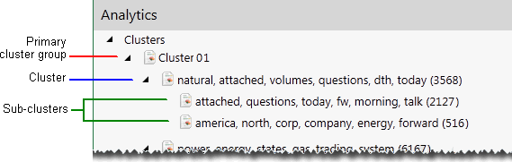
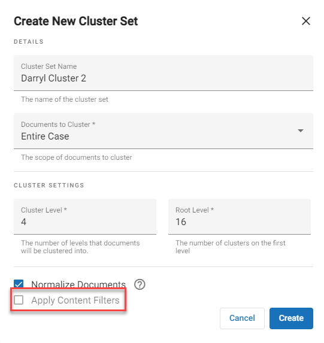

A cluster is a group of conceptually similar documents existing together in a tree-type hierarchy.
Cluster sets are groups of clusters that are visually represented through color coding in the concept wheel shown in the Visual Search dashboard.
The following example shows how clusters display in

Clustering is based on an algorithm that finds the general major groupings and minor groupings of the data and presents cluster results in a balanced hierarchy. The number of cluster levels, size, and other settings can be adjusted before a cluster is created. You may choose to cluster the entire case or a selected saved search.
For more information about the concept wheel, see
Planning will bring you the greatest success in defining
You must understand your case data, case documents, and reviewer tasks. For example, review cases and discuss with reviewers the types of clusters and categories that will assist them as they do their jobs.
For categories: If an appropriate analytics index has not been created, complete
Determine required category sets. Sets are distinguished by the number of allowed documents, similarity score, and/or which search is to be affiliated with the category set. For example, you may have the category set “Energy Issues.”
Determine needed categories, that is, titles that represent the topics users must find in
Identify examples of content that exemplify the categories you create. Examples may be case documents, document text, and/or other content.
Start
Creating a cluster set in the Analytics screen is similar to how it was done in
The Analytics Settings screen allows you to manage cluster sets.
To create a cluster set, in the left bar click the Analytics Settings icon  .The Analytics screen appears.
.The Analytics screen appears.

Click the + to the right of the Cluster Sets pane header. The Create New Cluster Set dialog box appears.


Fill in the fields as appropriate.
|
|
Note: To apply content filters, you must first go into
 |
Click Create. The Confirm Cluster Creation dialog box appears. The dialog box will inform you whether there are any documents that do not contain extracted text. Those documents will not be included in the cluster set. Click Continue.
Wait for the cluster set to generate. You can either watch the generation process in Job Manager or simply wait for it to finish through the Analytics screen. When it is complete, the cluster set details box will display Complete.

If the cluster set fails to generate, the details box will display Failed. In addition, an error message will appear.

The Analytics Settings screen, accessed by clicking the icon in the left bar, allows you to view the cluster set tree.
To see the cluster set tree:
In the left bar click the Analytics Settings icon to create the Analytics for cluster sets. In the left pane, the list of cluster sets appears.
Select the appropriate cluster set and refresh the screen to show the cluster set tree.
|
|
Note: If the cluster set does not contain a cluster tree or has failed to generate the cluster tree, a message similar to the following will pop up:
|
Click the  icon at the top right of the cluster set details list. The Delete Cluster dialog box appears.
icon at the top right of the cluster set details list. The Delete Cluster dialog box appears.
Click  .
.
If there are clusters within the set that contain dependencies, an error message dialog box will display to indicate that the cluster(s) cannot be deleted. The following shows one cluster contains dependencies:
Either click  to close the dialog box, or to see what the dependency is, click
to close the dialog box, or to see what the dependency is, click  . A screen displays that shows the code of the particular dependency. For example:
. A screen displays that shows the code of the particular dependency. For example:
In this case, the dependency is that the cluster is part of a saved search.
Manage Analytics is the area in the System Manager where you govern how Analytics works. This is done through normal user permissions rather than Super Admin permissions.
The System Manager opens. In the left pane of the System Manager, click Groups.

Click on the name of the group you would like to edit. The group profile opens on the right side of the screen.
Click the Edit icon  . You are now able to modify the users, permissions, and cases for the selected group.
. You are now able to modify the users, permissions, and cases for the selected group.
Click Save.
Related pages: